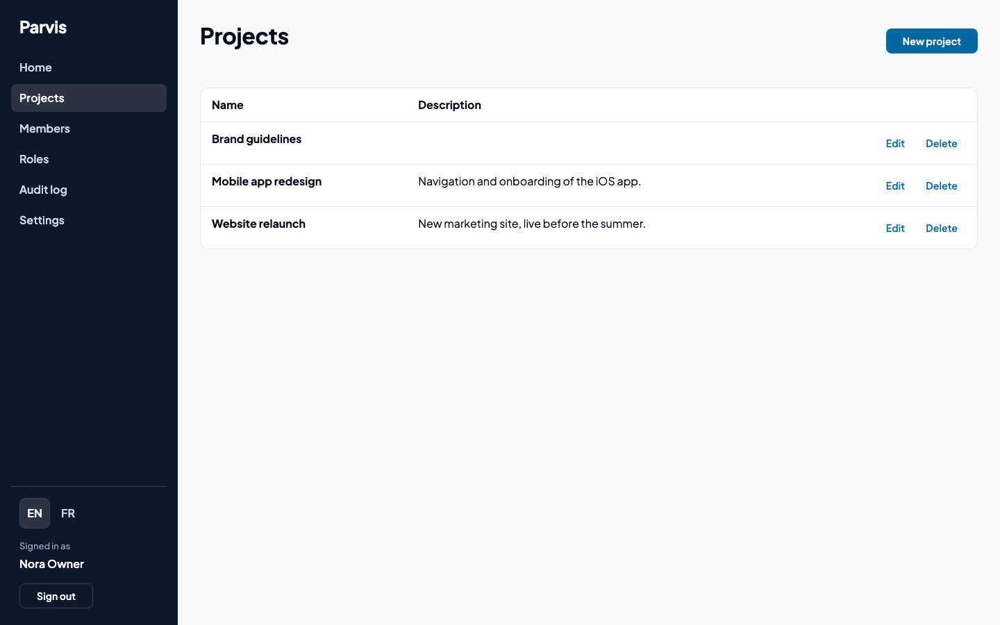
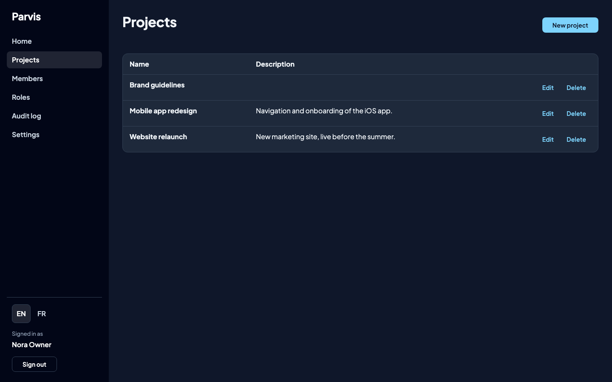
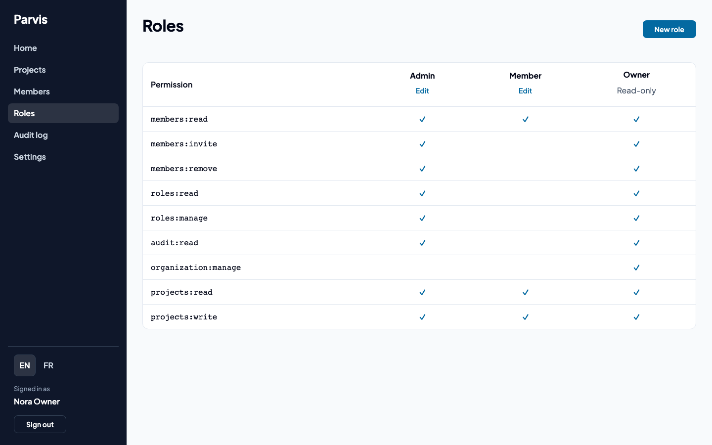
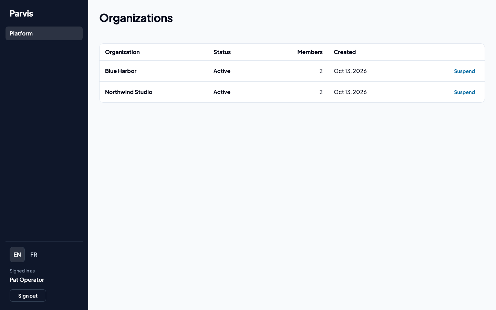

The multi-tenant part of your SaaS, already built and tested.
Parvis is a source-code starter on Angular, Spring Boot and Keycloak. Sign-in, organizations, invitations, roles and an audit log are done, so your first week goes into your own product.
See the price See what the build checksSELECT name FROM project; -- same query, same table| name |
|---|
| Website relaunch |
| Billing import |
| name |
|---|
| Mobile app v2 |
PostgreSQL Row-Level Security does the filtering, not only your code. If someone adds a table without a policy, the build fails.
Why it exists
Every B2B product needs sign-in, organizations, members, roles and a record of who did what before it has a single feature. That is weeks of work.
The hard part is keeping one customer's data away from another's. It is also the part that is easiest to get slightly wrong and not notice. Parvis does it once, with tests that prove it.
What is included
- Organizations and invitations
- Signing up creates an organization and makes its creator the Owner. Other people join by invitation.
- Roles you can edit
- Each organization composes its own roles on a screen. It cannot lose its last Owner or hand out a permission its editor does not hold.
- Audit log
- One per organization, with a screen to read and filter it.
- Keycloak, managed from the app
- Members, invitations and settings are handled in your own screens, so nobody opens the Keycloak console.
- Sessions without tokens in the browser
- Server-side OIDC with an HttpOnly cookie. The API also accepts a Bearer token.
- Operator screen
- List and suspend organizations.
- English and French, light and dark
- Switch language without a reload. Colours come from a theme file.
- Tests and CI
docker compose upruns it. A separate Compose file is for production. GitHub Actions cover backend, frontend, end-to-end and images.- Room for your code
- Your own migrations folder with reserved version ranges, a way to add permissions, and architecture tests that keep your additions on the safe path.
- Documentation in English and French
- One page per feature, each with an example.
Screens




What the build checks
| Data isolation | Tests cover JPA, native SQL and tables you add. RlsCoverageIT fails the build on any table without a policy. |
|---|---|
| Permissions | Every route declares the permission it needs. An architecture test fails the build if one does not. |
| Production settings | The production Compose file refuses public change-me-* secrets and plain-HTTP realms. |
| Test count | 672 backend, about 290 frontend and 27 end-to-end tests (Playwright). |
| Security review | Scanned with semgrep, dependency advisories checked, and a manual review done. Every finding was fixed with a test. |
Stack
Java 25, Spring Boot 4.1, Spring Security 7, Hibernate 7, PostgreSQL 18, Flyway, Angular 22, Keycloak 26.8, nginx, Playwright, Docker Compose and GitHub Actions. You need Java 25 and Node 24 LTS.
To run the demo:
cp .env.example .env
docker compose --profile demo up -d --build --waitThen open http://localhost:4200.
Is it for you
It suits freelancers, small agencies and SaaS publishers building a multi-tenant B2B product on this exact stack.
Not included: subscriptions and payments, SAML presets, several organizations per user, Kubernetes manifests, a published image registry. If you want a code generator or another frontend, JHipster is free and a good choice.
Price
One project
Full source for one product.
Unlimited projects
Full source for as many products as you build.
One payment, no subscription. You get updates for 12 months. Lemon Squeezy handles the payment and the VAT. You receive one .zip archive with its SHA-256 checksum.
Sales open soon. Write to CONTACT_EMAIL to be told when Parvis is available.
Questions
Do I get the source?
Yes, all of it, to change and build on. The terms set the licence.
Can I run it in production?
It ships a production Compose example, migrations as a separate step and a security page that says what is enforced and what stays yours. TLS and the reverse proxy are yours to provide.
Who answers my questions?
Me, by email. See support.